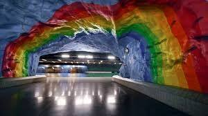
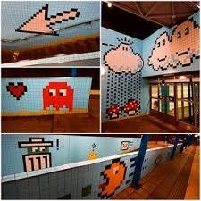
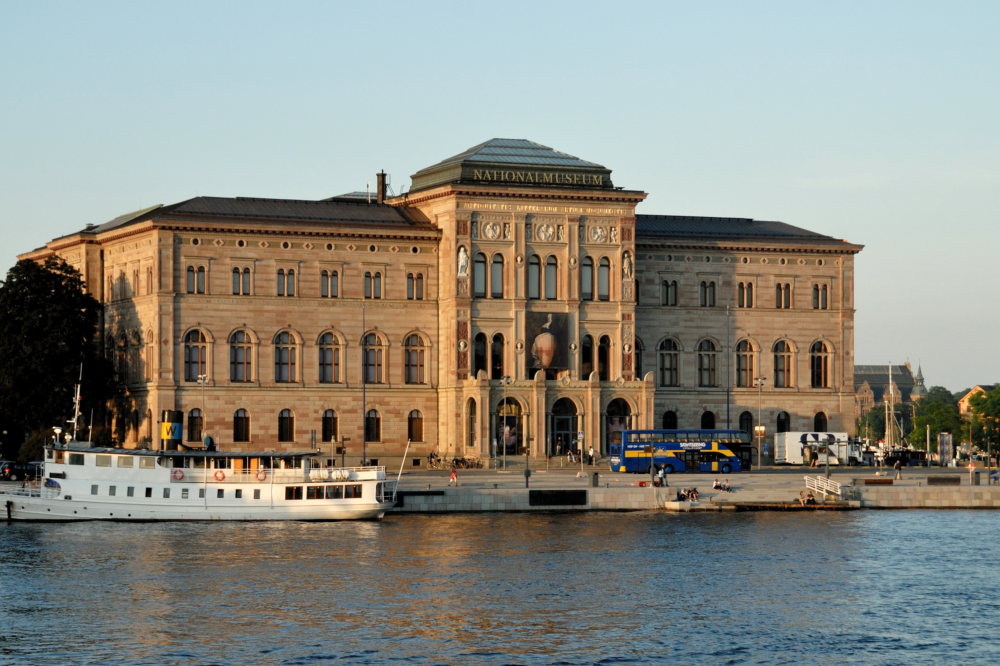
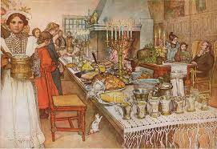

A Stoccolma abbiamo l'opportunità di
visitare numerosi Musei, più di 70: il Museo Nordico (Nordiska Museet),
il Museo dell’Acqua (Aquaria Vattenmuseum), il Museo Nobel ma non
possiamo perdere il Museo più visitato della Scandinavia: il Vasa, che
presenta al pubblico un vascello perfettamente conservato, affondato
nel 1628 e recuperato nel 1961; sono esposti oggetti della cambusa,
utensili, abiti, per rivivere la vita a bordo in una nave che
rappresentava la magnificenza e la potenza del Re di Svezia dell'epoca.
L'Arte a Stoccolma si respira ad ogni angolo della città ma anche i
sotterranei ci riservano delle gradite sorprese: nelle stazioni della
metropolitana della città (in svedese Stockholms tunnelbana) si
possono ammirare molte opere d’arte: una galleria d’arte
impressionante, lunga 110 Km. Oltre 90 delle 110 stazioni espongono le
opere di quasi 150 artisti, dagli anni ’50 ai giorni nostri:
allestimenti di scavi archeologici, mosaici, graffiti, piastrelle
degli anni ’50, dipinti, bassorilievi ed incisioni. Un progetto
lanciato negli anni Cinquanta da Vera Nilsson e Siri Derkert.
La stazione Solna Centrum è
caratteristica per il soffitto rosso cavernoso che sembra ‘cedere’
sulla pensilina. La stazione Hallonberg è stata decorata da bambini.
Una delle fermate più suggestive è la Stadion, dove gli artisti
Åke Pallarp e Enno Hallek hanno realizzato una grotta azzurra con un
arcobaleno.

La stazione che non possiamo lasciarci sfuggire è quella di
Thorildsplans dove l’artista Lars Arrhenius ha usato delle piastrelle
in ceramica lasciandosi ispirare dai primi video giochi degli anni ’70:
Pack Man e Super Mario si riuniscono in uno scenario davvero unico e
divertente.

L’azienda dei trasporti pubblici organizza gratuitamente dei viaggi
guidati lungo le tre linee rossa, blu e verde con lo scopo di
illustrare queste opere ed avvicinare i turisti all'Arte in modo
inconsueto ed originale.
Il Nationalmuseum

Il Nationalmuseum (o Museo nazionale di Belle Arti) è la principale
galleria d'arte svedese, si trova sulla penisola di Blasieholmen in
centro a Stoccolma e al suo interno si possono ammirare 16.000 opere
d'arte.
L'edificio che lo ospita, edificato tra il 1844 e il 1866, trova
ispirazione nell'architettura rinascimentale del Nord Italia.
Una collezione davvero completa che comprende opere dal tardo
Medioevo all'inizio del XX secolo: collezione di oggetti di porcellana,
dipinti, sculture.
All'interno anche una biblioteca d'arte, aperta sia agli studiosi
c he al pubblico.
Nel museo si possono ammirare capolavori di artisti come
Rembrandt, Rubens, Goya, Renoir, Degas and Gauguin...
Una sezione è dedicata alla pittura di pittori svedesi: Ernst
Josephson, C F Hill and Anders Zorn.
Le opere di Carl Larsson

Non possiamo perdere le opere esposte realizzate da Carl Larsson
(Stoccolma, 28 maggio 1853 – Sundborn, Falun, 22 gennaio 1919), pittore
ed illustratore molto amato non solo dagli svedesi. Nato nel centro di
Stoccolma una famiglia molto povera, all'età di tredici anni fu ammesso
all'Accademia Reale Svedese delle Arti di Stoccolma, diventando uno
degli alunni di spicco e di riferimento. Con gli anni abbandonò la
pittura ad olio per passare alla tecnica artistica degli acquerelli. I
suoi familiari, la moglie, Karin Bergöö, interior designer ed artista,
e i loro sette figli divennero i soggetti preferiti di Larsson che
realizzò delicate composizioni ad acquerello che raccontano scene e
momenti di gioiosa vita domestica e tradizioni svedesi: i giochi dei
bambini, i preparativi per le feste di Santa Lucia e di Natale, le
tavole imbandite... Larsson inoltre disegnò molteplici storie ad
immagini in sequenza, diventando così uno dei primi creatori svedesi di
fumetti. Tuttavia, nonostante sia conosciuto per le sue illustrazioni
di vita famigliare, le sue opere più importanti furono le grandi
pitture decorative in musei ed altri edifici pubblici, come gli
affreschi al Teatro dell'Opera e proprio al Museo Nazionale di Belle
Arti di St